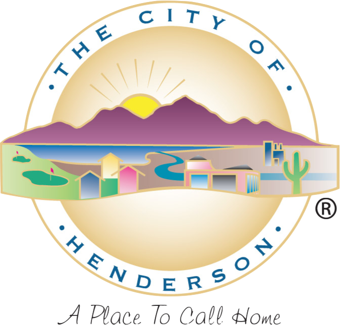

Onboarding/Product Implementation (July 2014 - Dec. 2015)
Assisting new clients with the process of onboarding them to their new services.
Events Services Department (October 2010 - June 2014)
Ushering, Ticketing, Audio/Visual.

Aquatics (July 2007 - Sept 2012)
Aquatics Department. Recreation Assistant, Lifeguard and Swim Instructor.